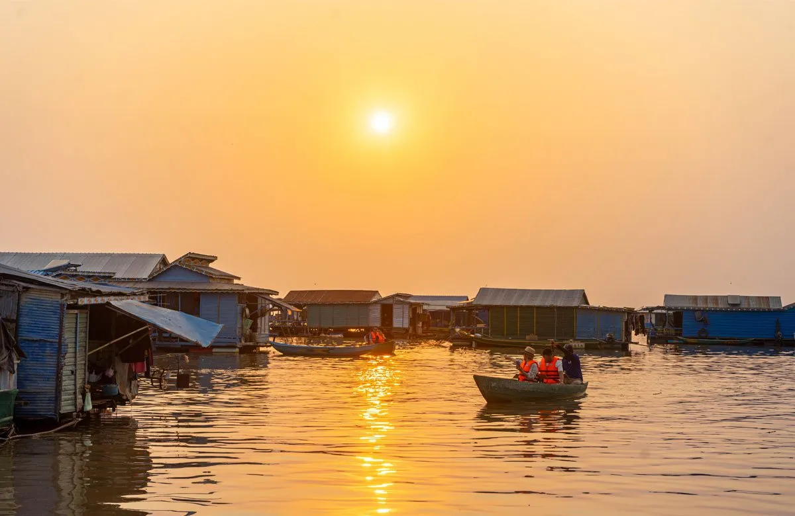
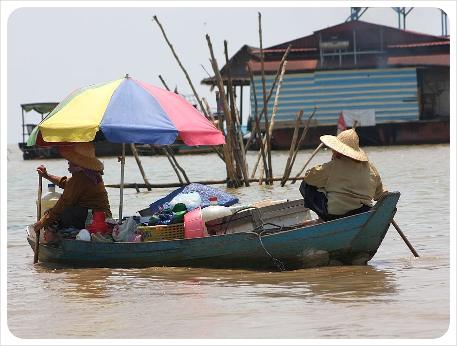
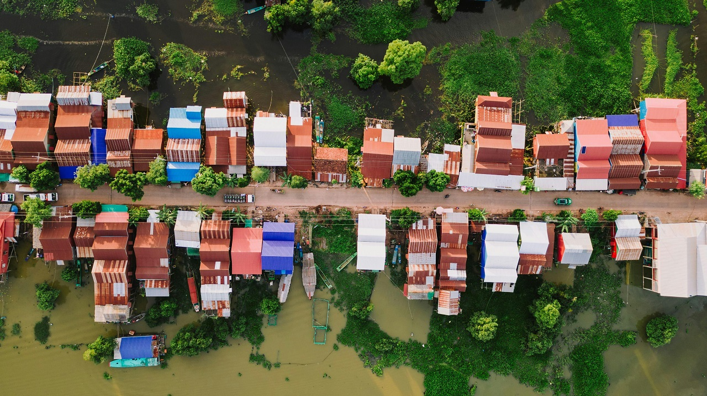

Плавучая деревня на Тонлесапе
Живая Камбоджа — дома, лодки и жизнь на воде
Плавучая деревня на Тонлесапе — это знакомство с Камбоджей, какой она живёт каждый день. Дома, школы, магазины и храмы здесь расположены прямо на воде.
Прогулка проходит на лодке по узким каналам и открытому озеру. По пути можно увидеть рыбаков, детей после школы и повседневную жизнь местных жителей.
При желании можно организовать рыбалку, остановиться для ужина на воде или встретить закат с видом на бескрайнюю гладь озера.
Такой формат подойдёт тем, кто любит неспешные маршруты, воду и живые, настоящие впечатления, без ощущения туристического аттракциона.


